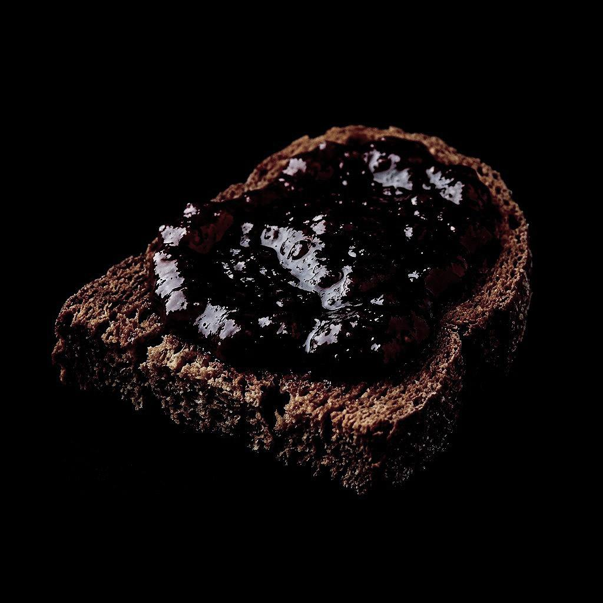

Наталія Бойчук
Грінка з мармеладом
«...получали таку маленьку гріночку хліба, мармулядов намащену...»
Читати спогадДорога в невідомість
Баланда
«...їсти давали двічі в сутки: кружку якоїсь баланди та маленький кусочок хліба...»
Читати спогадАнастасія Іваненко
Кофе-ерзац
«На сніданок – кофе-ерзац. В обід та ввечері суп, брюква...»
Читати спогадАрхівні записи
Крадена картопля
«Дівчата ходили на поле, крали картоплю, а тоді варили...»
Читати спогад